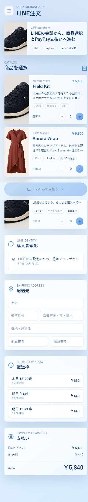
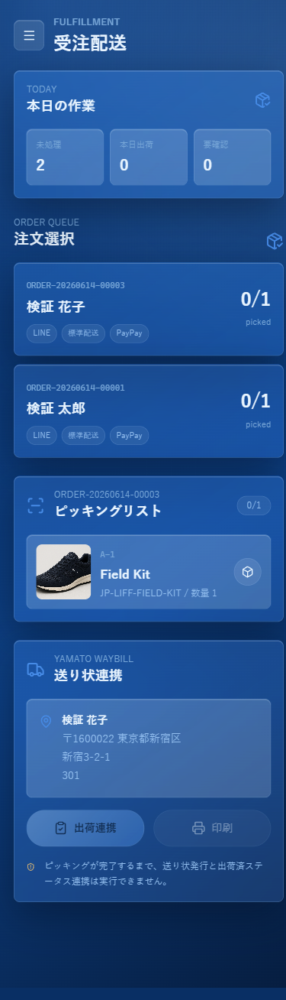

購入者側: LINE LIFF注文
LINE内または通常ブラウザから商品を選択し、配送先と配送枠を入力し、PayPay支払いへ進む。商品、在庫、価格はBackendから読み込み、注文は`Open Mercato sales/orders`へ登録される。
Japan smartphone MVP for Open Mercato
購入者のLIFF注文と受注者のピッキング・送り状発行を、Open Mercato Backendで接続する日本向けスマホMVPである。注文、支払い、出荷、ステータス同期を、現場が扱える2つの独立アプリとして整理する。


System Overview
LINE内または通常ブラウザから商品を選択し、配送先と配送枠を入力し、PayPay支払いへ進む。商品、在庫、価格はBackendから読み込み、注文は`Open Mercato sales/orders`へ登録される。
受注キューから注文を選び、全明細のピッキング完了後にヤマト送り状連携へ進む。Shipment作成後は送り状番号と出荷メタデータをBackend注文へ同期する。
PayPay資格情報、HMAC署名、Dynamic QRセッション作成はBackend Providerへ閉じ込める。LIFF Appは`/api/paypay-session`を通じて支払いセッションを要求する。
ヤマト向けの送り状・追跡番号レコードはShipping Carrier Providerが担う。MVPではラベル作成境界とtracking record flowを検証済みである。
Operation Flow
現場運用では、購入者のスマホ操作と受注者の出荷操作を分けることが重要である。その分離により、決済資格情報や配送連携の責務をBackendへ集約しながら、利用者には単純な画面を提供できる。
LIFF注文画面がBackend catalog/productsを読み込み、価格と在庫を表示する。
購入者が宛名、住所、電話番号、配送枠をスマホで入力する。
LIFF Appがsales/ordersとsales/paymentsを作成し、金額はBackend側で確定する。
Backend GatewayがPayPay Dynamic QR支払いセッションを作成する。
Fulfillment AppがBackend order queueを読み込み、未処理注文を表示する。
出荷担当者が明細を確認し、全商品がpickedになるまで出荷作成をブロックする。
Shipping Carrier ProviderがShipmentを作成し、送り状番号を取得する。
shipment metadataと任意の発送済みステータスをOpen Mercatoの注文へ反映する。
Application Specification
購入者向けのLight Blue Glass画面である。`NEXT_PUBLIC_LINE_LIFF_ID`が設定されている場合はLINE LIFF SDKを動的に読み込み、未設定時は通常ブラウザのプレビュー注文として動作する。
受注者・現場スタッフ向けのDark Blue Operations画面である。実注文キューを読み込み、ピッキング、出荷作成、送り状番号反映を1つの現場導線として扱う。
PayPay連携はフロントエンドではなくBackend providerへ閉じ込める。これにより、HMAC署名、merchant設定、API資格情報をスマホアプリから分離できる。
ヤマト連携はShipping Carrier provider境界として扱う。MVPではラベル作成、追跡番号、Backend注文同期の流れを検証し、本番では契約/API条件を反映する。
Validated MVP
本LPは構想だけでなく、2026年6月14日の実装・検証ログを前提としている。ローカルBackend、独立アプリ、Provider登録、Browser QAまで確認された状態を営業・導入検討用に整理している。
Production Readiness
本番運用では、各社の商標・公式表現、契約条件、API資格情報、Webhook、HTTPSエンドポイント登録を確認する必要がある。現時点では、実装境界とMVP検証が完了した段階として位置付ける。